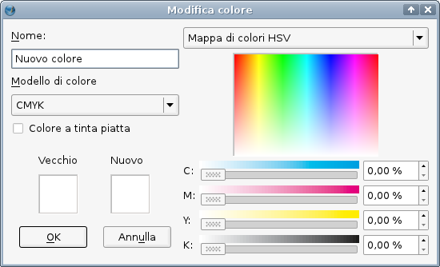
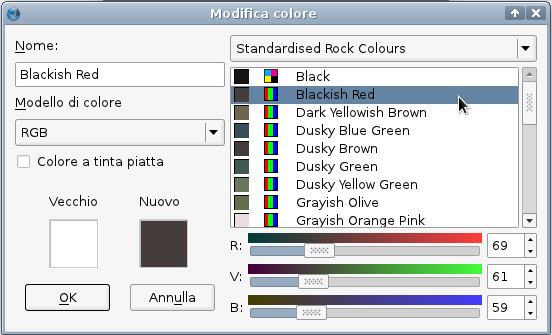
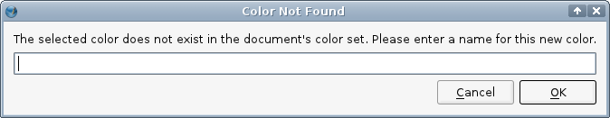
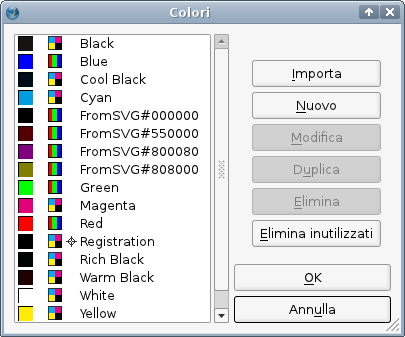

Questa è la finestra di dialogo Colori che abbiamo già incontrato nella pagina precedente di questa guida (ricordiamo che si apre con Modifica > Colori). Fate clic sul pulsante Nuovo, che apre la finestra di dialogo Modifica colore. Dategli un nome univoco, e poi usate i cursori per regolare la tonalità e la saturazione. Potete anche fare clic in un punto dell'area colorata per ottenere velocemente un colore vicino a quello a cui volete arrivare. Premete OK per aggiungere il nuovo colore alla vostra raccolta. Ricordate che con questo metodo la raccolta si applica solo al documento corrente; chiarito questo, più avanti vedremo come importare una raccolta da un file salvato.
Potete scegliere fra 3 modelli di colore: RGB, CMYK, e RGB per web. Quest'ultimo limita i valori a quelli che vengono mostrati allo stesso modo su sistemi di colore a 8 bit e a 16 bit.
|
|
 |
Se premete il pulsante in alto a destra nella finestra di dialogo Modifica colore, appare il lungo elenco di tutte le raccolte colore disponibili in Scribus. Fate clic su uno di questi colori, e nella raccolta corrente viene inserito un nuovo colore con il nome e i valori RGB/CMYK di quello selezionato. Tra le raccolte colore, molte contengono colori spot proprietari. |
|  |
Premendo il piccolo contagocce sulla barra degli strumenti si attiva il selettore colore, dopodiché facendo clic su un punto dello schermo potrete “prelevare” il suo colore. Si apre una finestra di dialogo che vi chiede di inserire un nome per il colore selezionato. Se non inserite alcun nome, il colore non viene aggiunto, nemmeno se premete OK.

Nella finestra di dialogo Colori vista sopra, selezionate il colore che desiderate duplicare e premete Duplica. Si apre la finestra Modifica colore, in cui il nome del colore è indicato come Copia di ...; potete salvarlo così com'è oppure potete modificarlo come abbiamo visto sopra e cambiarne il nome.
Potete eliminare un singolo colore, selezionandolo e premendo Elimina, oppure potete ridurre il numero dei colori presenti nell'elenco premendo Elimina inutilizzati, che ha l'effetto di eliminare tutti i colori che non sono utilizzati nel documento.
Se aprite un documento salvato, avrete a disposizione i colori che contiene. Quindi potreste aprire un documento esistente, cancellarne l'intero contenuto, e salvarlo con un altro nome. Potrete quindi utilizzarlo per creare un nuovo documento che contiene gli stessi colori del precedente.
Potreste anche preparare in anticipo un documento vuoto contenente un certo insieme di colori, specialmente se volete utilizzare una raccolta di colori personalizzata. È consigliabile dargli un nome significativo, come “schemacolori3.sla” in modo che in seguito possiate trovarlo facilmente.
Dovreste anche tener presente che quando importate una pagina da un altro documento, anche i colori di quest'ultimo vengono importati. E infine, anche se avete già cominciato a lavorare su un nuovo documento, potete aprire Modifica > Colori, e selezionare Importa nella finestra di dialogo per importare i colori da un altro documento.Quando importate un oggetto dalla Biblioteca, i suoi colori vengono aggiunti a quelli del documento. Analogamente, quando si importano immagini vettoriali (SVG, EPS, e così via) gli eventuali colori in esse contenuti vengono importati.
|  |
In quest'esempio abbiamo importato un'immagine SVG. Esaminiamo la finestra di dialogo Colori (Modifica > Colori), in cui vogliamo mettere in evidenza alcuni particolari. Abbiamo iniziato con un documento la cui raccolta colori era la Scribus Basic, poi abbiamo importato un'immagine SVG, e questo ha provocato l'aggiunta dei suoi colori, che sono quelli che iniziano con FromSVG. Scribus non chiede alcuna conferma per l'importazione; pensate a quanto potrebbe essere gravosa l'operazione se l'immagine avesse un numero elevato di colori. Se desiderate importare soltanto i colori da un file vettoriale (EPS e varianti, PS), o da un file tavolozza adatto [AI (Adobe Illustrator), GPL (tavolozza di colori Gimp), SOC (tavolozza di colori OpenDocument), o da una descrizione in formato Scribus XML], potete farlo premendo Importa nella finestra di dialogo Colori. |
Notate che qui abbiamo diversi neri, e che ciascuno ha le sue caratteristiche. Il nero che è stato appena aggiunto, FromSVG#000000, è un nero RGB, tutti gli altri sono neri CMYK. Se spostate il cursore del mouse su ciascuno di essi, vedrete le differenze.
| C% | M% | Y% | K% | |
| Nero | 0 | 0 | 0 | 100 |
| Nero freddo | 60 | 0 | 0 | 100 |
| Registrazione | 100 | 100 | 100 | 100 |
| Nero ricco | 60 | 40 | 40 | 100 |
| Nero caldo | 0 | 60 | 30 | 100 |